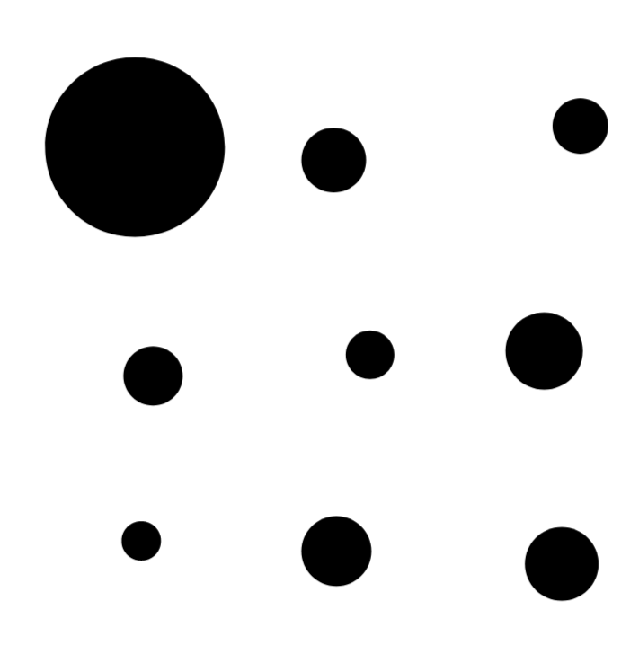
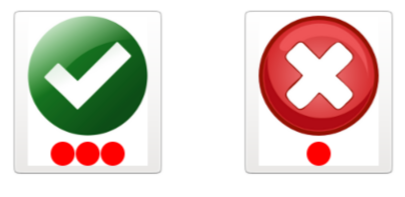
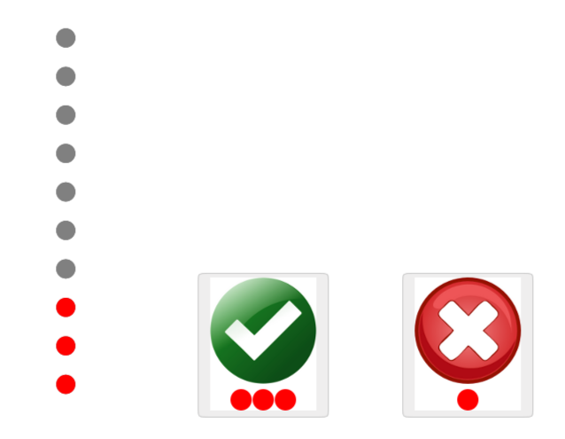
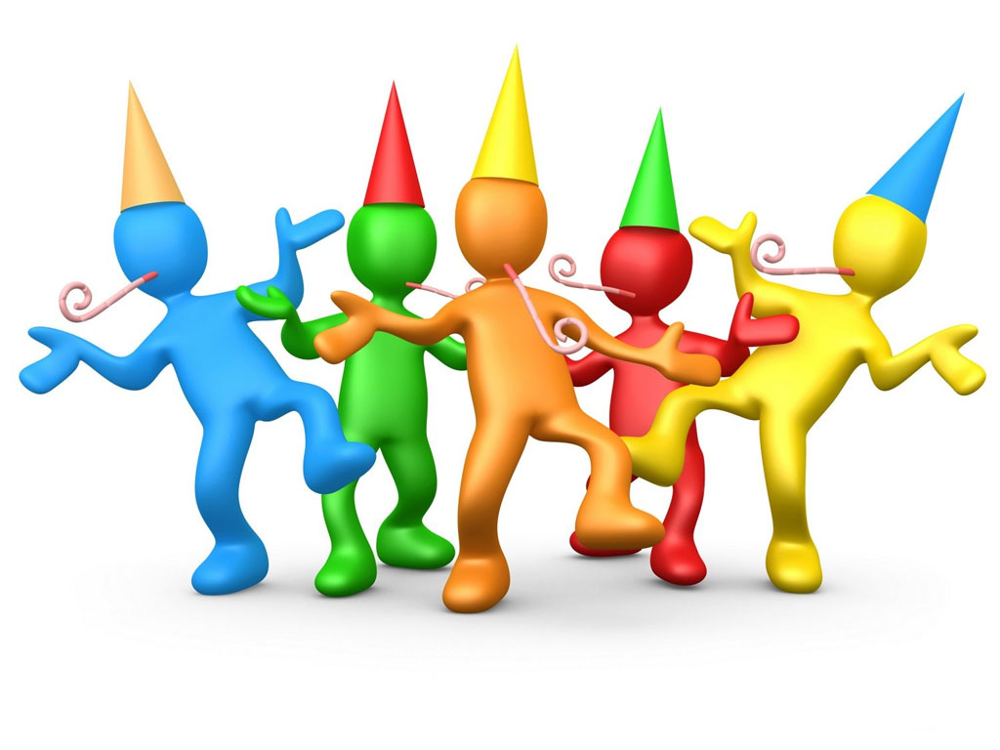

<!DOCTYPE html>
<html>
    <head>
        <title>My experiment</title>
        <script src="jspsych-6.0.4/jspsych.js"></script>
        <script src="jspsych-6.0.4/plugins/jspsych-html-keyboard-response.js"></script>
        <script src="jspsych-6.0.4/plugins/jspsych-image-button-response.js"></script>
        <script src="jspsych-6.0.4/plugins/jspsych-instructions.js"></script>
        <script src="circles.js"></script>
        <script src="report_confidence.js"></script>
        <link href="jspsych-6.0.1/css/jspsych.css" rel="stylesheet" type="text/css"></link>
        <meta charset="utf-8">
    </head>
    <body></body>
    <script>

    var uid = window.prompt('uid:', '')

    var points_to_pass=10;
    var stepSizes=[0.1,0.05,0.05,0.01];
    var level=0.3;
    var nUp=1;
    var nDown=3;
    var trial_index=0;
    var consecutive_wins=0;
    var consecutive_losses=0;
    var step_index=-1;
    var step=[];
    var max_levels=50;
    var score = 0;

    var saveData = function() {

      function saveRemote(filename, csvdata) {
        var xhr = new XMLHttpRequest();
        while(true) {
          xhr.open('POST', 'write_data.php', false);
          xhr.setRequestHeader('Content-Type', 'application/json');
          try {
            xhr.send(JSON.stringify({filename: filename, filedata: csvdata}));
          } catch(error) {
            console.log(error)
          }
          if(xhr.status == 200) {
            console.log(filename + ' successfully saved to server.')
            break
          } else {
            if (!window.confirm(filename + ' could not be saved to server. Try again?')) {
              localStorage.setItem(filename, csvdata)
              var blob = new Blob([csvdata], {type: 'text/csv'})
              var a = document.createElement('a')
              var url = URL.createObjectURL(blob)
              a.href = url
              a.download = filename + '.csv'
              document.body.appendChild(a)
              a.click()
              setTimeout(function() {
                document.body.removeChild(a)
                window.URL.revokeObjectURL(url)
              }, 0)
              break
            }
          }
        }
      }

      var basename = uid.toString().padStart(3, '0') + jsPsych.startTime().toISOString()

      saveRemote('metacog-data_' + basename, jsPsych.data.get().csv())
      saveRemote('metacog-intdata_' + basename, jsPsych.data.getInteractionData().csv())

    };

    var intro = {
      type: 'instructions',
      pages: [
        "<p align='center' style='font-size:40px;' > ¡BIENVENIDO AL JUEGO DE LOS CÍRCULOS! <br><br> APRETÁ SEGUIR PARA APRENDER A JUGAR.</p>",
        "<p align='center' style='font-size:35px;' > EN ESTE JUEGO VAS A VER MUCHOS CÍRCULOS <br> <br> Y VOS TENÉS QUE HACER CLICK EN EL MÁS GRANDE <br><br> APRETÁ SEGUIR PARA CONTINUAR </p>",
        "<p align='center' style='font-size:35px;' > DESPUÉS DE ELEGIR EL MÁS GRANDE, VAS A VER DOS BOTONES. <br> <br> SI ESTÁS SEGURO DE QUE ELEGISTE EL CÍRCULO CORRECTO, APRETÁ EL BOTÓN VERDE <br><br> Y SI NO ESTÁS SEGURO, APRETÁ EL ROJO <br><br> APRETÁ SEGUIR PARA CONTINUAR </p>  ",
        "<p align='center' style='font-size:30px;' > SI APRETÁS EL BOTÓN VERDE Y HABÍAS ELEGIDO EL CÍRCULO CORRECTO, GANÁS 3 PUNTOS. <br><br>PERO SI APRETÁS EL BOTÓN VERDE Y NO HABÍAS ELEGIDO EL CÍRCULO CORRECTO, PERDÉS 3 PUNTOS.<br> <br>Y SI APRETÁS EL BOTÓN ROJO, GANÁS SIEMPRE 1 PUNTO. <br><br> APRETÁ SEGUIR PARA CONTINUAR </p>  ",
        "<p align='center' style='font-size:35px;' > ¡CADA VEZ QUE LLEGUES A 10 PUNTOS PASÁS DE NIVEL!<br><br>APRETÁ SEGUIR PARA EMPEZAR </p>",
      ],
      allow_keys: false,
      allow_backward: true,
      show_clickable_nav: true,
      button_label_previous: 'VOLVER',
      button_label_next: 'SEGUIR',
    }

    var trial = {
        type: 'circles',
        points_to_pass: points_to_pass,
        points: function(){
          var results = jsPsych.data.get().select("accum_score").values;
          points=results[results.length-1];
          if (points >= points_to_pass){
            points=points%points_to_pass;
          }
          return points;
        },
        on_start: function(){
          trial_index++;
        },
        level: function(){
            if (trial_index==0){
              return level;
            } else{
              var results = jsPsych.data.get().select("won").values;
              var last_trial_won=results[results.length-1];
              if ((last_trial_won && consecutive_wins ==1)|| (!last_trial_won && consecutive_losses==1) ){ // reversal
                step_index++;
                step=stepSizes[Math.min(step_index,stepSizes.length-1)];
              };
              if(trial_index==1){
                if(last_trial_won){
                  level=Math.max(0,level-step);
                }else{
                  level=Math.max(0,level+step);
                }
              }
              if(last_trial_won && ( (consecutive_wins==nDown ) ) ){
                  level=Math.max(0,level-step);
                  consecutive_wins=0;
              }else if (!last_trial_won && ( (consecutive_losses==nUp) ) ) {
                level=Math.min(1,level+step);
                consecutive_losses=0;
              }
              return level;
            }
        },
        on_finish: function(){
            var results = jsPsych.data.get().select("won").values;
            var last_trial_won=results[results.length-1];
            if(last_trial_won){
              consecutive_wins++;
              consecutive_losses=0;
            }else{
              consecutive_losses++;
              consecutive_wins=0;
            }
        }
    };

    var report_confidence={
      type:'report_confidence',
      points_to_pass: points_to_pass,
      won: function(){
        var results = jsPsych.data.get().select("won").values;
        return results[results.length-1];
      },
      points: function(){
        var results = jsPsych.data.get().select("accum_score").values;
        points=results[results.length-1];
        if (points >= points_to_pass){
          points=points%points_to_pass;
        }
        return points;
      },
      on_finish: function() {
        score += jsPsych.data.getLastTrialData().select("trial_score").values[0]
      }
    };

    var if_node = {
      timeline: [trial,report_confidence],
      loop_function: function(){
        var results = jsPsych.data.get().select("accum_score").values;
        accum_score= results[results.length-1];
        if((accum_score>=points_to_pass)||trial_index>=max_levels){
          return false;
        } else{
          return true;
        }
      }
    };

    var did_win = {
      type: "image-button-response",
      stimulus: "images/congrats.jpg",
      trial_duration: 1000,
      choices: []
    };


    var big_if_node={
      timeline:[if_node,did_win],
      loop_function: function(){
        if (trial_index>=max_levels){
          return false;
        }else{
          return true;
        }
      }
    }

    var winner = {
      type: 'html-keyboard-response',
      stimulus: function() {
        var html = `
          <div style="position:relative;background-color:#00aa00;height:100vh;width:100vw;display:table-cell;vertical-align:middle">
            <p style="font-size:10vw;margin:0;color:#cc9900">
              ¡GANASTE${score > 0 ? ' ' + score + ' PUNTO' : ''}${score > 1 ? 'S' : ''}!
            </p>
          `;
        return html
        },
      on_load: function() {
        if (timer) { 
          timer.clear();
          timer = null;
        };
        setTimeout(saveData, 100)
      },
      choices: jsPsych.NO_KEYS,
    }

    jsPsych.init({
      timeline: [intro,big_if_node, winner],
      on_finish: function() {
        jsPsych.data.displayData();
      },
      default_iti: 250
    });

    </script>
</html>
